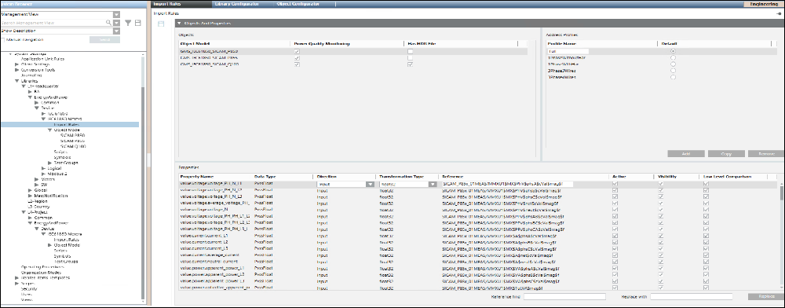

Import Rules Workspace
After you have defined your object model, you must configure the Import Rules on the Objects and Properties expander.
For information on naming conventions for names, paths, and other elements, see Common Rules for Names and Paths in the Management System and Naming Rules for Subsystem Elements in Naming Conventions.

Objects and Properties Expander: Objects
Objects Fields | |
Item | Description |
Object Model | Custom IEC61850 Object Models as imported in the custom library. |
Power Quality Monitoring | Select the Power Quality Monitoring check box to support the alert generation in the management station using the HDR file. |
Has HDR File | Select the Has HDR File check box to generate alerts using an HDR file. The HDR file provides information regarding the cause of the fault, the fault number, the time when the fault was triggered, and so on. |
Objects and Properties Expander: Address Profiles
You can create multiple address configurations for an object model by creating multiple address profiles. These profiles are required to support multiple address configurations that can be applied to a particular device instance.
After creating the address profiles, you may provide the address configurations for these profiles from the Properties section. You can also have empty address configurations for any of the properties of the object model. You can set one of the address profiles as the default profile.
When importing the CSV file, the address configuration of the any address profile can be associated with the device instance. If no address profile is specified with the device instance in the CSV file, then the default profile from the Import Rules will be applied automatically.
However, if the configured address profile from the CSV file is not present in the Import Rules, then the instance of device will not be created in the Management Platform and an error message will display in the analysis log.
Address Profiles Fields | |
| Description |
Profile Name | Address Profile for the selected object model. |
Default | Allows you to select the Address Profile that is to be set as the default profile. When importing a CSV file that does not have an address profile associated with a device instance, the importer will use the address configuration of the default address profile during import. |
Add | Allows you to create a new address profile. |
Copy | Allows you to create a copy of an existing address profile along with its address configuration. You can then rename this profile to a new profile and modify the displayed address configuration for the new profile in the Properties section. This ensures that you do not need to manually specify the address configuration for each individual property. |
Remove | Removes an existing address profile. |
Objects and Properties Expander: Properties
Properties Fields | |
Item | Description |
Property Name | Name of the property of the selected object model. |
Data Type | Data type of the selected property. |
Direction | Select the direction. |
Transformation Type | Select a transformation type from a list of types supported by that Data Type. |
Reference | Hardware reference address on the device where the selected property will write to or read from. |
Active | Enables or disables the address configuration of the selected property. If you disable this field, then the value of the property instances will not communicate with the field device. |
Visibility | Select the Visibility check box if you want the property of the selected object model to be displayed in the Operations and Extended Operations pane. By default this check box is selected, however, if you do not want to display this property, you must deselect this box. |
Low Level Comparison | Low Level Comparison is applicable for only those properties with Direction as Input or InOut. By default, this check box is unchecked. If this box is selected, then the driver sends only the changed property values to the device. |
Reference find | Enter the text to be replaced in Reference. |
Replace with | Enter the new text which you want to replace with the text specified in Reference find. |
Replace | Replaces all the instances of the text in Reference. |